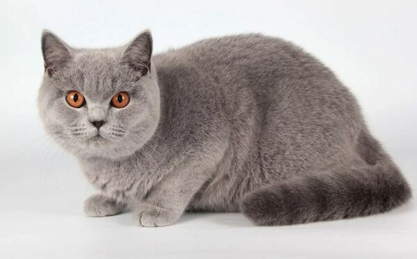

Top 7 giống mèo cảnh đẹp và cách chọn mua mèo cảnh thuần chủng
1. Mèo Xiêm
Đây là giống mèo cảnh thuần chủng có nguồn gốc từ Thái Lan và còn có tên gọi khác là Siamese Cat. Giống mèo này được đem về từ châu Âu trong khoảng giữa thế kỉ 18 và 19. Sau đó, chúng được nuôi nhiều ở khu vực Bắc Mỹ. Khoảng cách giữa Thái Lan và Việt Nam cũng không xa nên mèo xiêm đã du nhập vào nước ta những năm 1990s. Thời đó mèo xiêm được nuôi làm mèo cảnh vừa để bắt chuột. Nhà giàu thời đó mới mua được mèo xiêm, giá của chúng lên tới cả chỉ vàng.
Sau này khi còn nhiều giống mèo quý hiếm khác du nhập vào Việt Nam thì mèo xiêm bắt đầu giảm nhiệt. Hiện nay giá mèo xiêm thuần chủng nhập Thái dao động từ 4 – 6 triệu, nhập từ châu Âu có thể lên tới 16 triệu còn mèo xiêm lai thì từ 800 ngàn tới 1,5 triệu đồng thôi.
Mèo xiêm có bộ lông khá ngắn và mượt, chúng cũng có nhiều màu đẹp. Đặc điểm nổi bật nhất trên cơ thể là phần lông ở mặt, đuôi, tai, bàn chân có màu đậm hơn những vị trí khác
2. Mèo Anh Lông Dài
Một trong các loại mèo cảnh đang được nhiều bạn trẻ yêu thích đó là mèo Anh lông dài (British Longhair). Mèo Anh lông dài được đánh giá là loài mèo cảnh đẹp, có ngoại hình vô cùng xinh xắn, dễ thương với bộ lông dài mềm mại. Khi còn nhỏ chúng vô cùng hiếu động, thích chạy nhảy, đùa nghịch nhưng tới tuổi trưởng thành mèo Ald thường trầm tính và hiền lành hơn, cũng không ham hố bắt chuột như xưa nữa.
Chăm sóc mèo Anh lông dài cầu kỳ nhất chính là phần lông. Bạn sẽ mất thời gian chải chuốt lông cho chúng hơn, dùng loại sữa tắm riêng cho mèo cảnh lông dài cũng như có chế độ ăn, lựa chọn thức ăn cho mèo và môi trường sống hợp lý để bộ lông luôn mượt mà, ít bị rụng.
Giá mèo cảnh Anh lông dài không thuần chỉ dao động từ 1,5 – 4 triệu đồng. Những con có màu lông đặc biệt, thuần chủng và có giấy tờ đầy đủ sẽ có mức giá lên tới gần 20 triệu đồng.
3. Mèo Anh Lông Ngan
Giống mèo cảnh được săn đón và tìm mua nhiều nhất ở nước ta hiện nay đó là mèo Anh lông ngắn, còn được gọi là British Shorthair. Mèo Anh lông ngắn cũng khá dễ nuôi, khả năng thích nghi với thời tiết và điều kiện sống ở Việt Nam khá tốt. Nhìn bộ lông của chúng tuy ngắn nhưng rất dày, có thể giữ cho cơ thể có nhiệt độ ổn định. Các màu lông phổ biến của chúng là xám, tabby, trắng, silver, golden,… Để kiếm được một con mèo cảnh dòng dõi Anh lông ngắn thuần chủng khá khó, đa phần sẽ phải tới các trại nuôi mèo hoặc nhập từ nước ngoài với mức giá khá cao, dao động từ 7 – 15 triệu. Những nơi bán mèo cảnh rẻ rao giá dưới 5 triệu hầu hết là mèo lai, không thuần chủng.
Người ta thích mèo Anh lông ngắn bởi nét đáng yêu và lười biếng của chúng. Giống mèo cảnh này có phần đầu khá to, mắt tròn như hai hòn bi ve màu vàng đồng, bàn chân mũm mĩm cũng tròn xoe. Phía đuôi lại rất dày và tròn chứ không xù lông như người anh em lông dài.
4. Mèo ba tư
Mèo ba tư cũng thuộc một trong các loại mèo cảnh được nuôi phổ biến nhất trên thế giới. Nghe cái tên chắc hẳn bạn cũng đã đoán được xuất xứ của giống mèo này rồi đúng không? Mèo Ba Tư có nguồn gốc từ đất nước Ba Tư cổ đại (Iran ngày nay, được người dân phát hiện và nuôi từ khá sớm. Sau đó được đưa sang các nước châu Âu và dần trở nên phổ biến như ngày nay. Đây là loài mèo cảnh đẹp với bộ lông dài thướt tha, ngoại hình sang chảnh nên được giới quý tộc châu Âu hết mực yêu quý, chiều chuộng. Dựa vào ngoại hình, người ta chia mèo Ba Tư ra làm 4 loại với nhiều mức giá khác nhau).
Mèo Ba Tư có nhiều chủng loại khá phức tạp, đôi khi người ta nhân giống với mèo Anh hoặc Nga, giá chỉ dưới 2 triệu đồng/con. Vì thế khi tìm mua mèo cảnh Ba Tư bạn nên tìm đến những nơi bán mèo cảnh uy tin. Tránh trường hợp mua bị lừa mua phải mèo đã lai qua nhiều đời.
5. Mèo tai cụp Scottish Fold
Mới xuất hiện vào khoảng giữa thế kỷ 20 và có nguồn gốc từ Scotland, mèo Scottish Fold đã khuấy đảo cộng đồng yêu mèo nhờ vào đôi tai cụp và ngoại hình dễ thương của mình. Nếu không nhờ đôi tai cụp, người ta rất dễ nhầm lẫn giống mèo cảnh này với mèo Anh lông ngắn.
Màu lông của mèo tai cụp khá phong phú, có những màu như tabby, trắng, socola,… Những chú mèo Scottish có thể có bộ lông dài hoặc ngắn. Tuổi thọ của chúng kéo dài khoảng 12 – 15 tuổi, khá cao so với mức tuổi thọ trung bình của mèo cảnh. Mọi người yêu thích mèo cảnh Scottish Fold còn vì một lý do khác, đó là tính cách quấn chủ, ngọt ngào của chúng.
6. Mèo chân ngắn Munchkin
Mèo chân ngắn Munchkin còn được gọi là mèo lùn, là một trong số các loại mèo cảnh có ngoại hình dễ thương nhất. Chúng gây được sự chú ý với con người nhờ vào đôi chân ngắn cũn cỡn và dáng đi rất ngộ nghĩnh. Dù chân ngắn nhưng loài mèo cảnh này chưa bao giờ sợ độ cao, dù nhảy không tới nhưng mèo Munchkin sẽ luôn tìm cách để đi lên.
Giống mèo lùn khá thân thiện với con người và sống cực kỳ tình cảm. Chúng thích chơi trò đuổi bắt đèn laze, cần câu mèo. Và nếu không có người chơi cùng, mèo Munchkin dành thời gian để ngủ nhiều hơn. Do đó, giống mèo này rất dễ mắc bệnh béo phì. Vì thế bạn nên có một chế độ ăn và tập luyện hợp lý cho chúng.
7. Mèo Sphynx không lông
Sẽ có rất nhiều người không cho rằng mèo Sphynx là loài mèo cảnh đẹp, bởi giống mèo này không có lông, đúng hơn là lông của chúng cực ngắn, tơ và bám sát vào da nhìn thật kỹ mới thấy. Tên gọi gắn liền với chúng nhất chính là mèo Ai Cập, tuy nhiên nguồn gốc của mèo Sphynx lại là Canada.
Mèo Sphynx cũng thuộc hàng top các giống mèo đắt nhất thế giới khi giá của nó rơi vào khoảng 22 – 70 triệu đồng. Đừng tin những lời chào mời bán mèo cảnh Shynz chỉ khoảng hơn chục triệu nhé.